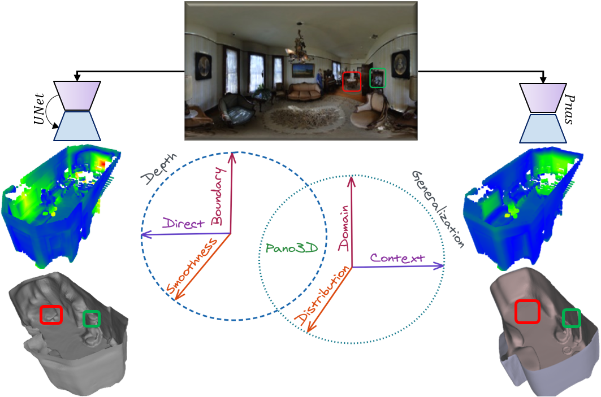

Preserving depth's piece-wise smoothness should be the primary goal of data-driven depth estimation models.
Yet most works only assess direct depth performance neglecting secondary traits like smoothness or boundary preservation.
Different architectures (UNet -- left, or Pnas -- right) exhibit different inference characteristics skewed towards boundaries (UNet) or smoothness (Pnas).
The Pano3D benchmark descends from a holistic perspective taking into account all performance traits, and additionally focuses on an orthogonal performance direction, generalization to unseen data from different distributions, contexts or domains.
In the following interactive visualization, we provide qualitative results for the UNet model.
Input Panoramas
Predicted meshes
This project has received funding from the European Union’s Horizon 2020 innovation programme
ATLANTIS under grant agreement No 951900.